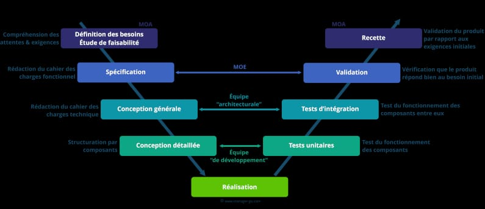

Ngomsem Ngueramadji 20A113FS
proposé par Dr. Amadou
Le modèle en V ou V-Model est une méthodologie de développement linéaire unique utilisée lors d'un cycle de développement logiciel (SDLC). Le modèle en V se concentre sur une méthode typiquement en cascade qui suit des phases strictes étape par étape. Alors que les étapes initiales sont des phases de conception générales, les étapes progressent de façon de plus en plus granulaire, menant à la mise en œuvre et au codage, et finalement, à travers toutes les étapes de test avant la fin du projet. Dans cet exposé, nous examinerons exactement ce que le V-Model implique réellement, et pourquoi il peut (ou pas) être adapté à certains types de projets ou d'organisations. Pour cela, nous verrons tout d'abord sa présentation générale puis montrer les détails de ses différentes phases, présenter respectivement ses avantages et ses inconvénients et enfin son domaine d'application.
Dans le cadre de la présentation générale du cycle en V communément appelé modèle en V, il serait judicieux de définir d'abord ce qu'est un modèle qui peut être souvent confondu à la définition d'une Méthode.
Un modèle est une pièce maîtresse de la modélisation qui a pour objectif de structurer les informations et activités d'une organisation : données, traitements, et flux d'informations entre les entités tandis qu'une méthode est une fonction faisant partie de l'interface d'un objet ou encore on pourrait dire qu'une méthode assemblé plusieurs objets. Le modèle en V est un modèle de gestion de projet qui implique toutes les étapes du cycle de vie d’un projet : conception, réalisation, validation.
Le cycle en V en gestion de projet découle du modèle en cascade
théorisé dans les années 1970, qui permet de représenter des processus de
développement de manière linéaire et en phases. Ce mode de gestion de
projet a été développé dans les années 1980 et appliqué au champ des
projets industriels, puis étendu aux projets informatiques. Il a été remis
en cause à partir du début des années 2000, sous l’effet de l’accélération
des changements technologiques, favorisant davantage les méthodes dites «
agiles ». Issue du waterfall model, ou modèle de gestion de projet en
cascade, la méthode du cycle en V repose sur des étapes séquentielles et
linéaires, allant de l'analyse des besoins au test d’acceptation. La
partie descendante du « V » correspond aux quatre actions de conception et
de développement du système, tandis que la partie ascendante reprend les
quatre phases d'assurance qualité qui lui sont associées. En effet, la
particularité de ce modèle de gestion de projet est de combiner une phase
de validation pour chaque phase de développement. Le point de jonction, le
bas du V, correspond quant à elle à l'étape de réalisation. La lettre V
fait référence à la vision schématique de ce cycle, qui prend la forme
d’un V : une phase descendante suivie d’une phase ascendante. Le cycle en
V associe à chaque phase de réalisation une phase de validation, comme
l’illustre le schéma ci-dessous :

c'est la partie la plus importante de notre travail. Cette partie est decoupee est plusieurs phasees auxquelles nous avons, la phase de conception, la phase des besoins et la phase de test de validation.
Il s’agit de la deuxième phase majeure du projet ; qui va consister à implémenter les spécifications définies dans la première phase. Elle s’effectue de la manière suivante :
La phase comprend différents tests vérifiant chaque étape de la conception du produit. Ces mesures d'assurance qualité prennent la forme de tests unitaires, de tests d'intégration, de tests de validation et d'une recette fonctionnelle.
Le principal avantage du cycle en V est qu’il évite de revenir en arrière incessamment pour redéfinir les spécifications initiales, comme un cliquet. Chaque phase de conception demande la rédaction d’une documentation précise et exhaustive, où chaque point doit être validé par le produit final. Dès lors qu’une étape est validée, on ne revient pas en arrière et on passe à l’étape suivante sur une base solide ; c’est la principale force du cycle en V. De par son aspect à la fois rigoureux et intuitif, le cycle en V demeure un processus facile à mettre en œuvre. Le travail préalable de définition des spécifications en début de projet fait que, une fois lancé, l’ensemble des étapes est connu des collaborateurs, qui peuvent se repérer facilement dans la temporalité du projet et connaître la finalité de leurs tâches. De la même manière, les documentations nécessaires à chaque étape sont réplicables d’un projet sur l’autre dans leur structure (cahiers des charges, cahiers de test…). De véritables opportunités s’offrent aux entreprises qui utilisent le cycle en V afin de façonner leur gestion de projets. Et pour cause, nombreux sont les avantages qu’offre aujourd’hui la méthode:
Du point de vue des développeurs, cette démarche s’avère souvent trop simpliste, car elle ne reflète pas intégralement le processus de développement.
Le V modell XT est une approche très répandue dans le secteur industriel. Le recours au cycle en V est presque même devenu la norme pour la plupart des appels d’offres des marchés publics relatifs à des projets informatiques. Par conséquent, c’est un paramètre très important pour les entreprises qui conçoivent des logiciels pour les pouvoirs publics et les ministères. Il convient aux projets informatiques de toute taille, que ce soit au niveau des entreprises, de l’armée ou du secteur public. C’est un outil qui permet de faciliter l’organisation et la réalisation liées au développement, à la maintenance et au développement continu des différents systèmes d’information. Le cycle en V peut également être utilisé dans d’autres secteurs de développement, comme par exemple les systèmes électroniques ou mécaniques dans les domaines de la recherche et des sciences. Pour ces domaines d’application, il existe des versions légèrement modifiées qui tiennent compte des stades spécifiques propres à chaque secteur.
En définitive, il était question pour nous de présenter le modèle en V. Il en ressort que le cycle en V est un modèle de gestion de projet qui implique toutes les étapes du cycle de vie d’un projet : conception, réalisation, validation. Le cycle en V ou V model en anglais est un modèle utilisé dans différents processus de développement, notamment dans le développement de logiciels. Ce modèle a principalement 3 phases décrites en neuf étapes et possède plusieurs avantages ainsi que des faiblesses .